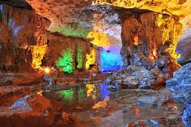
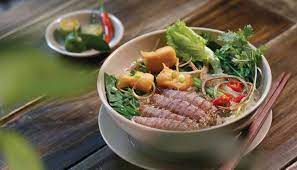
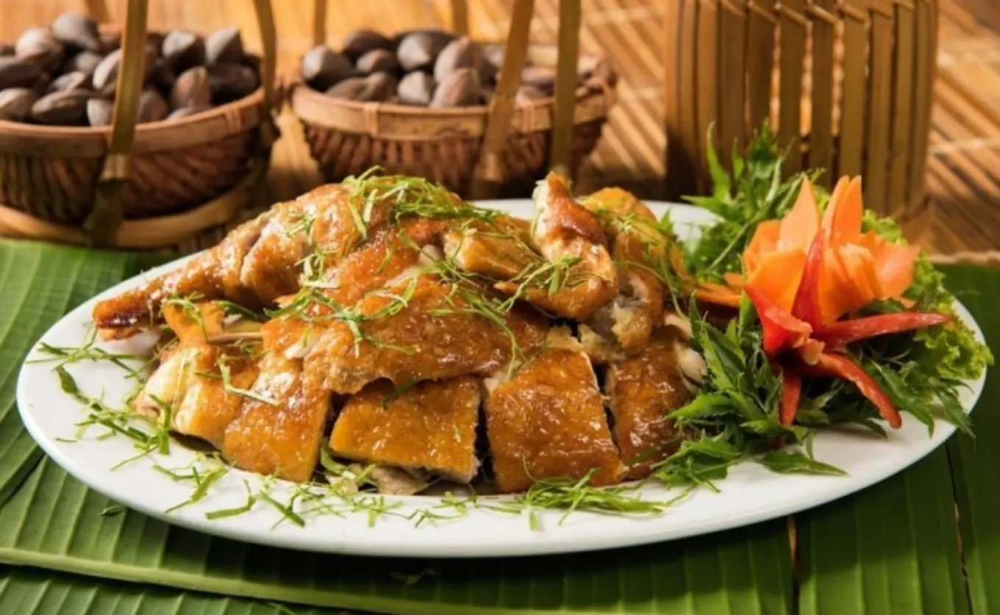

Thông Tin Tour
Giá: 3,500,000 VND
Ngày đi: 15/12/2024
Phương tiện: Máy bay lượt đi + khứ hồi và xe limousine cao cấp.
Thời gian: 2 ngày 1 đêm
Giới thiệu: Tour khám phá Hang Sửng Sốt với các hang động kỳ thú và trải nghiệm trên du thuyền sang trọng.
Lịch Trình Tour
- Ngày 1: Lên du thuyền, khám phá các hang động.
- Ngày 2: Tham quan các đảo nhỏ và trở về.
Điểm Tham Quan Nổi Bật
-  Hang Sửng Sốt: Nằm trên đảo Bồ Hòn, cùng với Hang Luồn, Hang Trống và Hang Trinh Nữ ở vị trí trung tâm của Vịnh Hạ Long.
- Trải nghiệm du thuyền trên vịnh: Tuyến thăm quan truyền thống, khu vực trung tâm vịnh.
Ẩm Thực Đặc Sắc
Tour sẽ giới thiệu đến du khách các món ăn nổi tiếng của Hạ Long:
- Chả mực: Món ngon truyền thống của người dân Hạ Long, tỉnh Quảng Ninh trong suốt hàng trăm năm qua.
-  Bún bề bề: Được dân “sành ăn" khen nức nở nhờ hương vị đậm đà, vừa miệng của nước dùng, bề bề bóc vỏ nguyên con tươi.
-  Gà đồi Tiên Yên: Có đặc tính khác hẳn với các giống gà khác như ngọt hơn, săn chắc hơn.
Phương Tiện Di Chuyển
Du khách có thể lựa chọn:
- Máy bay lượt đi + khứ hồi đầy đủ tiện nghi.
- Xe limousine sang trọng, thoải mái.